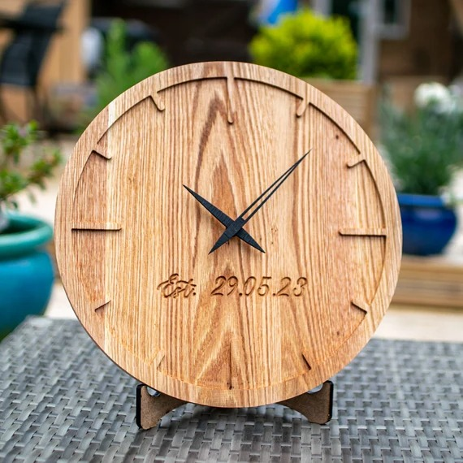
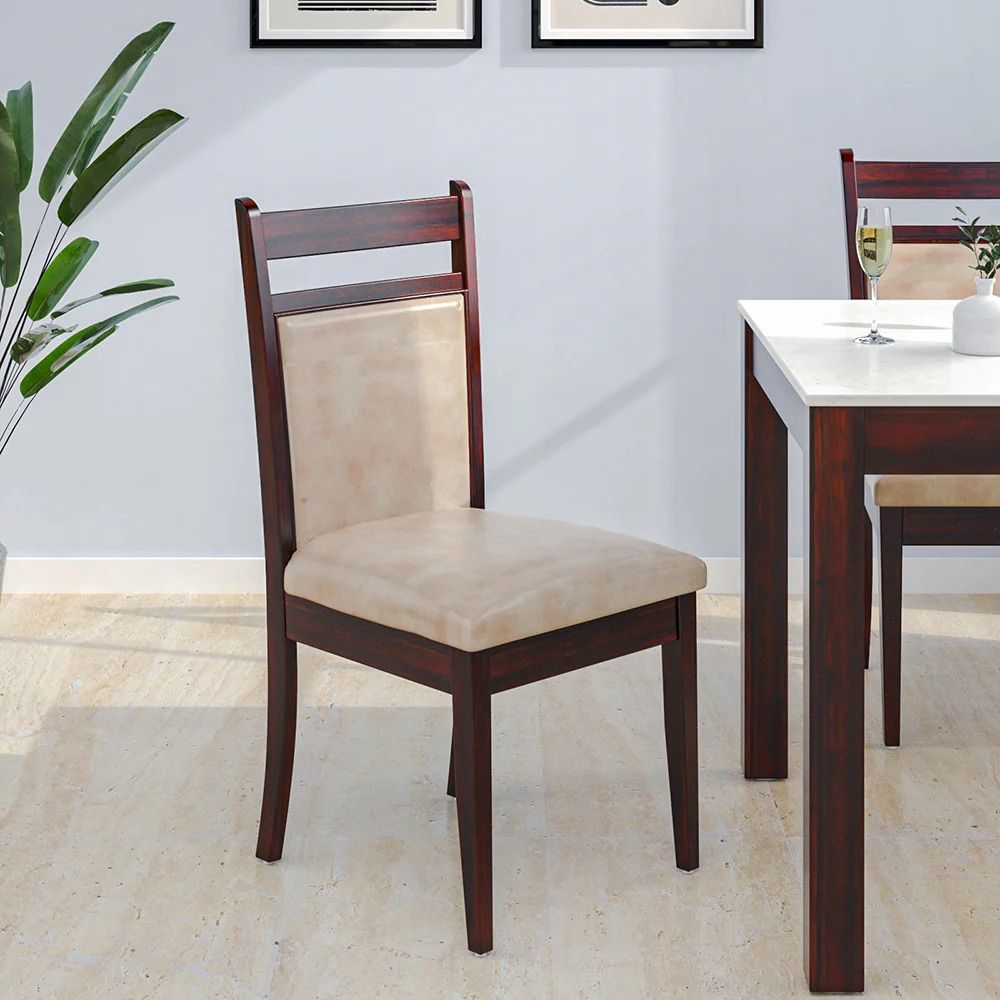
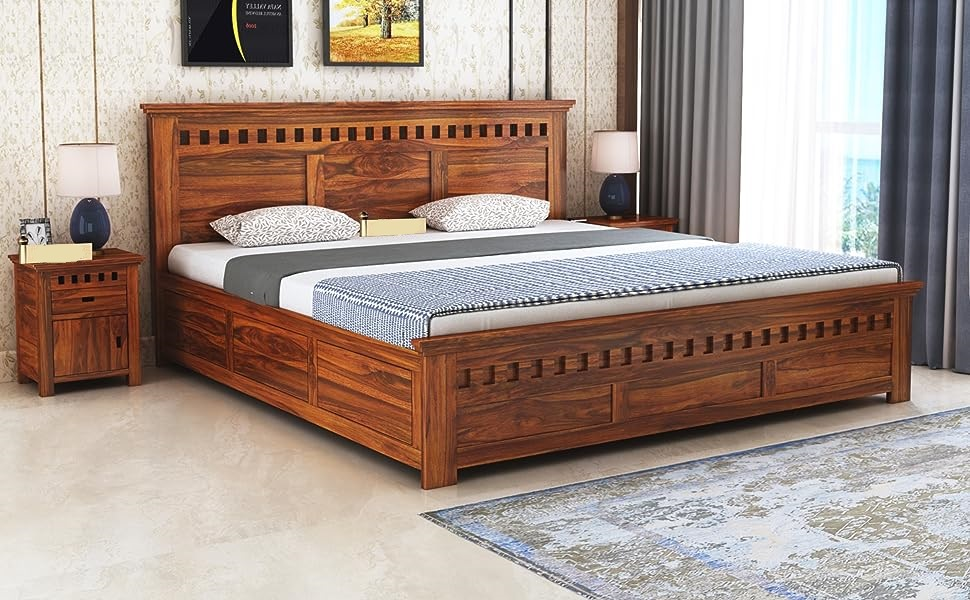

Featured Products:
Wooden Clock
Introducing our exquisite wooden clock, a timeless addition to any home decor. Crafted with precision and care, this clock seamlessly blends rustic charm with modern elegance. Made from sustainably sourced wood, each piece carries a unique grain pattern, adding character to your space. Measuring [dimensions], this clock is the perfect focal point for any room, from cozy living areas to sophisticated offices. Its silent quartz movement ensures accurate timekeeping without any distracting ticking sounds, offering a peaceful ambiance. The warm tones of the wood complement a variety of interior styles, from classic to contemporary. With its minimalist design and smooth finish, this clock effortlessly enhances the aesthetic appeal of your surroundings. Whether displayed on a mantel, shelf, or wall, our wooden clock commands attention with its understated beauty. It not only tells time but also tells a story of craftsmanship and tradition. Bring a touch of nature indoors and elevate your decor with our wooden clock. It's not just a timepiece; it's a statement of your discerning taste and appreciation for fine craftsmanship. Order yours today and experience the timeless allure of our wooden clock. Make every moment count in style.
Price: rs.2549
Wooden Chair
Introducing our meticulously crafted wooden chair, a perfect blend of comfort and style. Handcrafted from premium-quality hardwood, this chair showcases exquisite craftsmanship and attention to detail. Each curve and contour is expertly sculpted to provide ergonomic support and a luxurious seating experience. Whether placed in a cozy corner of your living room, a serene reading nook, or around the dining table, this chair adds a touch of natural elegance to any space. Its timeless design transcends trends, making it a versatile addition to both traditional and modern interiors. The warm, rich tones of the wood exude warmth and sophistication, while the smooth finish highlights the natural grain patterns, adding depth and character to the piece. With its sturdy construction and durable materials, this chair is built to withstand the test of time, promising years of enjoyment and relaxation. Enhance your home with the beauty and functionality of our wooden chair. It's not just a piece of furniture; it's a statement of refinement and taste. Elevate your decor and create memorable moments with family and friends in the comfort of our timeless wooden chair. Add a touch of nature-inspired luxury to your home today. Sit back, relax, and experience the unparalleled comfort and elegance of our wooden chair.
Price: rs.6549
Wooden Bed
Clothes, shoes, extra bed linen, pillows...running out of place to put everything? That's why single or double, beds with storage are an absolute necessity. Our beds collection includes everything from hydraulic storage beds to those with drawers, box storage, and cubbyholes inside the headboard. Explore now.hese wooden beds are available in several intricate designs such as swing patterns, wooden pattis, floral patterns and different geometrical styles. All the wooden beds are made of top quality Solid wood which guarantees strength and durability. You can choose from a wide range of queen size, king size, single and double beds. These wooden beds would not only add elegance to your bedroom but will help you having a sound sleep with great comfort. The modern wooden beds will give your home an all-new dimension. All wooden beds come with a lifetime warranty and free shipping all over India is available from our Sardashahar Furniture Factory.
Price: rs.45049
Dinner Table
Imagine a home with a dining set- it looks complete. Apart from sharing meals, a dining set serves many uses from morning tea to evening family discussions. we have carefully examined the requirements of families and designed solid wood dining tables that withstand the test of time. Whether you are looking for a round dining table set for 6 or a simple 2-seater dining table, we have options for every household's needs. Wishing to buy the most amazing dining table sets meeting your imaginative creative designs? Sunrise furniture holds the same for you. Sunrise furniture has a wide variety of your dining comfort online arriving at your doorsteps. We have a huge variety of collection of two seater, four seater and six seater dining table chair sets with variety of customized designs for eye-pleasing beautiful color shades of woods and wide variety of dimension for seat backrests, made of strong wooden quality of solid Sheesham wood.We also have solid wood Contemporary Style Low Dining Table / Breakfast Table Set for your choice of comfort. Do not fail to add the royal taste of Jodhpuri design for your dining sets to give it a royal and traditional look as per your taste and desire.